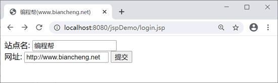
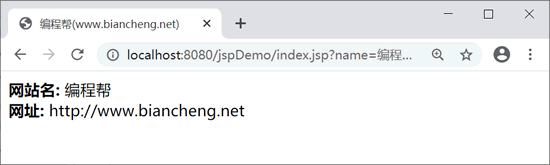
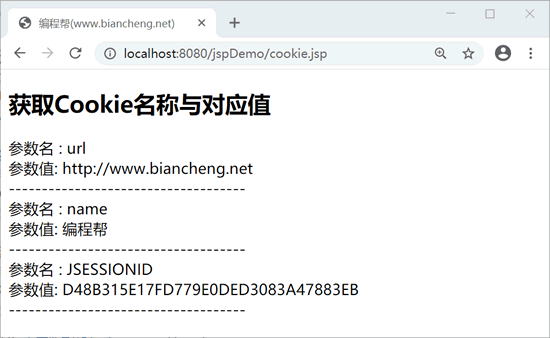
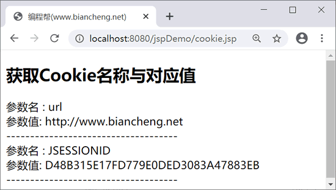

JSP Cookie的使用
Cookie 不是 JSP 内置对象，而是由 Netscape 公司发明，用来跟踪用户会话（session）的方式。
Cookie 由服务器生成并发送给浏览器（客户端），浏览器会将其以文本文件的形式存储在某个目录下。
例如，IE 浏览器把 cookie 信息保存在类似于 C://windows//cookies 的目录下，当用户再次访问某个网站时，服务器就会要求浏览器查找并返回之前发送的 cookie 信息，来识别此用户。
识别用户通常有以下步骤：
cookie 的作用表现在以下方面：
删除参数名为“name”的 cookie，cookie.jsp 代码如下：
注：也可以手动在浏览器中删除 cookie。
实际开发中，需要根据不同的业务需求来选择采用哪种技术，例如，用户的用户名和密码等敏感信息不能使用 cookie 存储，淘宝购物的”最近浏览过的商品“，则可以使用 cookie 存储在客户端。
Cookie 由服务器生成并发送给浏览器（客户端），浏览器会将其以文本文件的形式存储在某个目录下。
例如，IE 浏览器把 cookie 信息保存在类似于 C://windows//cookies 的目录下，当用户再次访问某个网站时，服务器就会要求浏览器查找并返回之前发送的 cookie 信息，来识别此用户。
识别用户通常有以下步骤：
- 服务器把 cookie 信息发送到浏览器，例如：用户 ID、用户名称等信息。
- 浏览器在本地存储这些信息。
- 浏览器再次向服务器发送请求时，它会同时将本地存储的 cookie 信息一同发送给服务器，然后服务器使用这些信息来识别用户或其它。
cookie 的作用表现在以下方面：
- 对特定对象的追踪，如用户的访问次数、最后访问时间等。
- 统计网页的浏览次数。
- 在 cookie 有效期内，记录用户的登录信息，简化下一次的登录过程。
- 实现各种个性化服务，如”最近浏览过的商品“。
注意：由于 cookie 会将用户的个人信息保存在客户端，如用户名、计算机名、以及浏览和登录的网站等。这些信息可能会包含一些比较敏感的内容，所以从安全角度来说，使用 cookie 存在着一定的风险，因此不建议在 cookie 中保存比较重要或隐私的内容。
cookie方法
cookie 常用方法如下：| 方法 | 说明 |
|---|---|
| public void setDomain(String pattern) | 设置 cookie 的域名，如 biancheng.net |
| public String getDomain() | 获取 cookie 的域名 |
| public void setMaxAge(int expiry) |
设置 cookie 有效期，单位：秒 默认仅在当前会话中存在 |
| public int getMaxAge() |
获取 cookie 有效期，单位：秒 默认为 -1，表示 cookie 保存到浏览器关闭为止 |
| public String getName() | 返回 cookie 的名称，名称创建后将不能被修改 |
| public void setValue(String newValue) | 设置 cookie 的值 |
| public String getValue() | 获取 cookie 的值 |
| public void setPath(String uri) |
设置 cookie 的路径 默认为当前页面目录以及子目录下的所有 URL |
| public String getPath() | 获取 cookie 的路径 |
| public void setSecure(boolean flag) | 设置 cookie 是否要加密传输 |
| public void setComment(String purpose) | 设置 cookie 注释 |
| public String getComment() | 返回 cookie 注释，如果 cookie 没有注释，则返回 null |
JSP使用cookie
JSP 使用 cookie 主要分为以下几个步骤。1）创建 cookie 对象
创建 cookie 对象，name 代表 cookie 的名称，value 表示该名称对应的值，语法如下：cookie cookie = new cookie(String name,String value);注意：name 和 value 中不能包含空格和以下字符：
[ ] ( ) = , " / ? @ : ;
2）写入 cookie
创建 cookie 对象后，调用 response.addCookie() 方法写入 cookie，代码如下：response.addcookie(cookie);
3）设置 cookie 有效期
调用 setMaxAge() 方法设置 cookie 的有效期（单位：秒），如将 cookie 有效期设置为 24 小时，代码如下：cookie.setMaxAge(60*60*24);
4）读取cookie
调用 request.getCookies() 方法读取 cookie，该方法返回 HTTP 请求中的 cookie 对象数组，需要通过遍历进行访问。示例
通过 HTML 表单将客户端数据提交到 index.jsp 中，并设置 cookie。login.jsp 代码如下：
<%@ page language="java" contentType="text/html; charset=UTF-8"
pageEncoding="UTF-8"%>
<html>
<head>
<title>编程帮(www.biancheng.net)</title>
</head>
<body>
<form action="index.jsp" method="get">
站点名: <input type="text" name="name"> <br />
网址: <input type="text" name="url" />
<input type="submit" value="提交" />
</form>
</body>
</html>
index.jsp 代码如下：
<%@ page language="java" contentType="text/html; charset=UTF-8"
pageEncoding="UTF-8"%>
<%@ page import="java.net.*"%>
<%
// 解决中文乱码
String str = URLEncoder.encode(request.getParameter("name"), "utf-8");
// 创建cookie对象
cookie name = new cookie("name", str);
cookie url = new cookie("url", request.getParameter("url"));
// 设置cookie有效期为24小时。
name.setMaxAge(60 * 60 * 24);
url.setMaxAge(60 * 60 * 24);
// 在响应头部添加cookie
response.addcookie(name);
response.addcookie(url);
%>
<html>
<head>
<title>编程帮(www.biancheng.net)</title>
</head>
<body>
<b>网站名:</b>
<%=request.getParameter("name")%><br>
<b>网址:</b>
<%=request.getParameter("url")%>
</body>
</html>
运行结果如下：

login.jsp页面运行结果
login.jsp页面运行结果

index.jsp页面运行结果
index.jsp页面运行结果
读取cookie
调用 request.getcookies() 方法，在 cookie.jsp 页面中读取 cookie，cookie.jsp 代码如下：
<%@ page language="java" contentType="text/html; charset=UTF-8"
pageEncoding="UTF-8"%>
<%@ page import="java.net.*"%>
<!DOCTYPE html>
<html>
<head>
<title>编程帮(www.biancheng.net)</title>
</head>
<body>
<%
cookie cookie = null; //创建cookie对象
cookie[] cookies = null;
// 获取 cookie 的数据
cookies = request.getcookies();
if (cookies != null) {
out.println("<h2> 获取cookie名称与对应值</h2>");
for (int i = 0; i < cookies.length; i++) {
cookie = cookies[i];
out.print("参数名 : " + cookie.getName());
out.print("<br>");
out.print("参数值: " + URLDecoder.decode(cookie.getValue(), "utf-8") + " <br>");
out.print("------------------------------------<br>");
}
} else {
out.println("<h2>cookie为空</h2>");
}
%>
</body>
</html>
运行结果如下：

删除cookie
删除 cookie 步骤如下：- 获取 cookie
- 将要删除的 cookie 有效期设置为 0
- 调用 response.addCookie() 方法重新写入 cookie
删除参数名为“name”的 cookie，cookie.jsp 代码如下：
<%@ page language="java" contentType="text/html; charset=UTF-8"
pageEncoding="UTF-8"%>
<%@ page import="java.net.*"%>
<!DOCTYPE html>
<html>
<head>
<title>编程帮(www.biancheng.net)</title>
</head>
<body>
<%
cookie cookie = null; //创建cookie对象
cookie[] cookies = null;
// 获取 cookie 的数据
cookies = request.getcookies();
if (cookies != null) {
out.println("<h2> 获取cookie名称与对应值</h2>");
for (int i = 0; i < cookies.length; i++) {
cookie = cookies[i];
//删除参数名为name的cookie
if ((cookie.getName()).compareTo("name") == 0) {
cookie.setMaxAge(0);
response.addcookie(cookie);
out.print("删除 cookie: " + cookie.getName() + "<br/>");
}
out.print("参数名 : " + cookie.getName());
out.print("<br>");
out.print("参数值: " + URLDecoder.decode(cookie.getValue(), "utf-8") + " <br>");
out.print("------------------------------------<br>");
}
} else {
out.println("<h2>cookie为空</h2>");
}
%>
</body>
</html>
刷新 cookie.jsp 页面，运行结果如下：

注：也可以手动在浏览器中删除 cookie。
session和cookie的区别
session 和 cookie 的区别如下：| session | cookie |
|---|---|
| 将信息保存在服务器 | 将信息保存在客户端 |
| 保存的值是 Object 类型 | 保存的值是 String 类型 |
| session 存储的数据随会话的结束而结束 | cookie 可以长期保存在客户端 |
| 安全性高，可以保存重要的信息 | 安全性低，通常用于保存不重要的信息 |
实际开发中，需要根据不同的业务需求来选择采用哪种技术，例如，用户的用户名和密码等敏感信息不能使用 cookie 存储，淘宝购物的”最近浏览过的商品“，则可以使用 cookie 存储在客户端。
关注公众号「站长严长生」，在手机上阅读所有教程，随时随地都能学习。内含一款搜索神器，免费下载全网书籍和视频。

微信扫码关注公众号